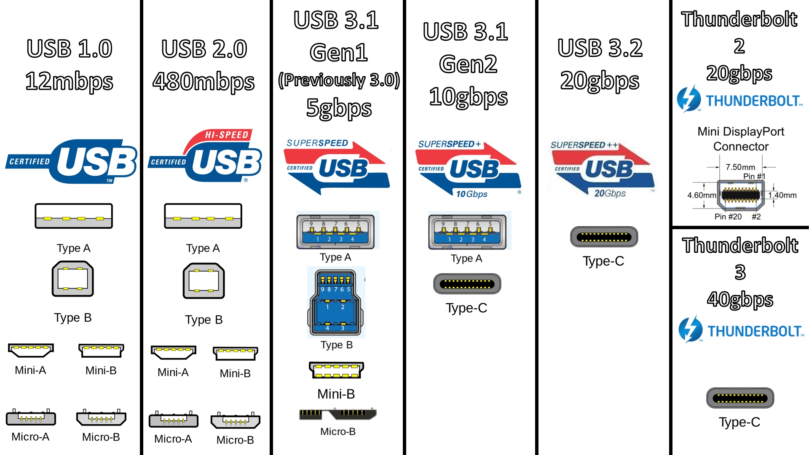

USB (Universal Serial Bus - "Універсальна послідовна шина") - послідовний інтерфейс для підключення периферійних пристроїв до обчислювальної техніки. Набув широкого поширення і став основним інтерфейсом підключення периферії до побутової цифрової техніки.
Інтерфейс дозволяє не тільки обмінюватись даними, а й забезпечувати електроживлення периферійного пристрою. Мережева архітектура дозволяє підключати велику кількість периферій навіть до пристрою з одним роз'ємом USB.
Розробка специфікацій USB проводиться в рамках міжнародної некомерційної організації USB Implementers Forum (USB-IF), що об'єднує розробників та виробників обладнання з USB шиною.
Кабель USB (до 2.0 включно) складається з чотирьох мідних провідників: двох провідників живлення та двох провідників даних у кручений парі. Провідники укладені в заземлене обплетення (екран).
Кабелі USB орієнтовані, тобто мають фізично різні наконечники підключення до пристрою (Тип B) і до хоста (Тип A). За допомогою кабелів формується інтерфейс між USB-пристроями та USB-хостом. Як хост виступає програмно-керований USB-контролер, який забезпечує функціональність всього інтерфейсу.
Пристрої можуть бути запитані від шини, але можуть вимагати зовнішнього джерела живлення. За умовчанням пристроям гарантується струм до 0,1А, а після погодження з хост-контролером – до 0,5А
USB підтримує «гаряче» підключення та вимкнення пристроїв. Це досягнуто збільшеною довжиною заземлювального контакту роз'єму по відношенню до сигнальних. При підключенні роз'єму USB першими замикаються заземлюючі контакти, потенціали корпусів двох пристроїв стають рівними і подальше з'єднання сигнальних провідників не призводить до перенапруг.
На логічному рівні пристрій USB підтримує транзакції прийому та передачі даних. Кожен пакет кожної транзакції містить номер кінцевої точки (endpoint) на пристрої. При підключенні пристрою драйвери в ядрі ОС читають із пристрою список кінцевих точок та створюють керуючі структури даних для спілкування з кожною кінцевою точкою пристрою. Сукупність кінцевої точки та структур даних у ядрі ОС називається каналом (pipe).
Кінцеві точки, отже, і канали, відносяться до одного з чотирьох класів - потоковий (bulk), керуючий (control), ізохронний (isoch) та переривання (interrupt).
Керуючий канал призначений для обміну з пристроєм короткими пакетами запитання-відповідь. Будь-який пристрій має керуючий канал 0, який дозволяє програмному забезпеченню ОС прочитати коротку інформацію про пристрій, у тому числі коди виробника та моделі, що використовуються для вибору драйвера, та список інших кінцевих точок.
Канал переривання дозволяє доставляти короткі пакети і в тому, і в іншому напрямку без отримання на них відповіді/підтвердження, але з гарантією часу доставки пакет буде доставлений не пізніше ніж через N мілісекунд. Наприклад, використовується у пристроях введення (клавіатури, миші, джойстики).
Ізохронний канал дозволяє доставляти пакети без гарантії доставки і без відповідей/підтверджень, але з гарантованою швидкістю доставки N пакетів на один період шини (1 кГц для low і full speed, 8 кГц для high speed). Використовується для передачі аудіо та відеоінформації.
Поточний канал дає гарантію доставки кожного пакета, підтримує автоматичне призупинення передачі даних при неготовності пристрою (переповнення або спустошення буфера), але не дає гарантії швидкості та затримки доставки. Використовується, наприклад, у принтерах та сканерах.
Час шини ділиться на періоди, на початку періоду контролер передає всій шині пакет «початок періоду». Далі протягом періоду передаються пакети переривань, потім ізохронні в необхідній кількості, в час, що залишився, в періоді передаються керуючі пакети і в останню чергу - потокові.
Розробники специфікації USB приділили увагу питанню автоматичного визначення функціональності USB пристроїв, щоб позбавити користувача рутинних дій при підключенні USB пристроїв. Для цього у стандарті передбачено два механізми:
• Пристрій повідомляє хосту свої атрибути, куди входить ідентифікатор розробника пристрою (VID) та ідентифікатор виробу (PID). На підставі цих ідентифікаторів хост (комп'ютер) шукає методи роботи з цим пристроєм (зазвичай це виражається у вимогі встановити драйвери, що постачаються розробником пристрою).
• Пристрій повідомляє хосту ідентифікатор стандартизованого класу пристроїв. В рамках концепції USB розроблено низку специфікацій стандартних класів пристроїв, у рамках яких уніфіковано роботу з пристроями певної функціональності. Наприклад, широко відомі пристрої класу Human Interface Device, HID (це мишки, клавіатури, ігрові маніпулятори тощо) та пристрої Mass Storage («флешки», дисководи). Для популярних класів пристроїв у комп'ютерах є готові драйвери, тому з'єднання таких пристроїв відбувається непомітно для користувача.
Специфікація USB 3.0 підвищує максимальну швидкість передачі інформації до 5 Гбіт/с, що значно більше швидкості, яку може забезпечити USB 2.0. Також версія 3.0 відрізняється збільшеною з 0,5 А до 0,9 А силою струму. Таким чином, від одного порту можна живити більше пристроїв, а також відпадає необхідність використання зовнішнього живлення для деяких пристроїв. У специфікації USB 3.0 роз'єми та кабелі оновленого стандарту фізично та функціонально сумісні з USB 2.0, причому для однозначної ідентифікації роз'єми USB 3.0 прийнято виготовляти із пластику синього кольору (у деяких виробників – червоного).
Кабель USB 2.0 містить чотири лінії — пару для прийому/передачі даних, плюс і нуль живлення, роз'єм «A» має 4 контакти.
Для передачі високошвидкісних SuperSpeed сигналів USB 3.0 додано ще чотири лінії зв'язку (дві виті пари) і один контакт сигнальної землі (GND_DRAIN). Дві додаткові диференціальні пари в USB 3.0 дозволяють підтримувати повнодуплексну передачу даних, а контакт GND_DRAIN призначений для закінчення дренажного проводу, а також для контролю електромагнітних перешкод та підтримки цілісності сигналу.
Нові контакти в роз'ємах USB 3.0 розташовані окремо від старих в іншому контактному ряду.
Більш детальний опис с призначенням наявних контактів роз'єма USB 3.0 Тип А:
Наступні ревізії USB 3.х дозволили збільшити максимально можливу швидкість передачі даних завдяки використанню дублюючих контактів як окремий канал у 24 пінових роз'ємах USB Type-C. Відповідно були внесені поправки в роботу хост-адаптерів для плавного переходу між 2-канальним режимом дублюючих ліній до одноканального режиму.
Специфікацію USB4 було опубліковано 29 серпня 2019 року. Новий базовий протокол підвищує максимальну швидкість до 40 Гбіт/с (при використанні сумісних кабелів Type-C), зберігаючи зворотну сумісність із USB 3.2, USB 2.0 та, опціонально, Thunderbolt 3.
Швидкість до 40 Гбіт/с досяжна лише зі спеціальними кабелями, що мають відповідне маркування. Для стандартних кабелів максимальна швидкість обмежена 20 Гбіт/с.
У листопаді 2022 року вийшла оновлена специфікація USB4 Version 2.0 із пропускною здатністю до 80 Гбіт/с
Наприкінці нижче наводяться дані про стандарти живлення за допомогою USB, а також загальна інфографіка розвитку інтерфейсу:
